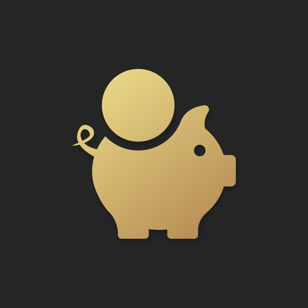

Market Bell은 가장 궁금한 것만 알려줍니다 — 개장·폐장·점심시간 종료까지 남은 시간. 신경 쓰는 모든 시간대에서.
무료 · iPhone · 위젯·알림·다이나믹 아일랜드 포함
홍콩·중국 본토·일본·한국은 거래 중 점심시간이 있습니다. Market Bell은 멈추는 시각과 재개하는 시각을 정확히 압니다.
미국과 유럽 시장의 거래 시간은 해마다 바뀝니다. 내 시간으로 환산할 필요가 없습니다.
지원하는 각 거래소의 휴장일 캘린더가 앱에 내장되어 있고 항상 최신 상태로 유지됩니다.
홈 화면 위젯, 개장 알림, 다이나믹 아일랜드. 이미 보고 있는 곳에 카운트다운을 놓습니다.
미국 · 일본 · 한국 · 홍콩 · 중국 · 영국 · 독일 · 유로넥스트